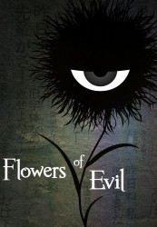

")
Alternativ: Flowers of Evil (Originaltitel)
 
 IMDB-Wertung: 7.7 / 10
IMDB-Wertung: 7.7 / 10  Metascore:
Metascore: 
Takao Kasuga ist literaturinteressiert und liebt besonders die Gedichte von Charles Baudelaire, wie etwa dessen Werk „Les Fleurs du mal“. Ansonsten gehört sein Herz Nanako Saeki und als er eines Tages nach der Schule ihre Turnkleidung findet, stiehlt er diese kurzerhand. Doch bereits am nächsten Tag wird er von seiner Tat eingeholt, denn seine Mitschülerin Sawa Nakamura eröffnet ihm, dass sie ihn dabei beobachtet hat und nur bereit ist, zu schweigen, wenn er einen speziellen „Vertrag“ mit ihr eingeht.
Jahr: 2013
Dauer: 23 Minuten
FSK: 12
Land: Japan Studio: CrunchyrollTonspuren: DD2.0 - ,
Untertitel: Deutsch,
Auflösung: 720p (1280x720) Größe: 185 MB
Genre: Thriller, Drama, Animation/Trick, TV-Serie
Regisseur: Hiroshi Nagahama
Drehbuch: Zexcs
Soundtrack:
Darsteller:
 Patrick Mölleken als Ken Kojima
Patrick Mölleken als Ken KojimaDatei: X:\HD-Anime-Serien\Aku no Hana Die Blumen des Bösen\Aku no Hana Die Blumen des Bösen E01.mkv seit 27.06.2017
Festplatte: Gemischt-01+Anime
 Es gibt insgesamt 67 Filme in der Gruppe 'HD-Anime-Serien'
Es gibt insgesamt 67 Filme in der Gruppe 'HD-Anime-Serien'